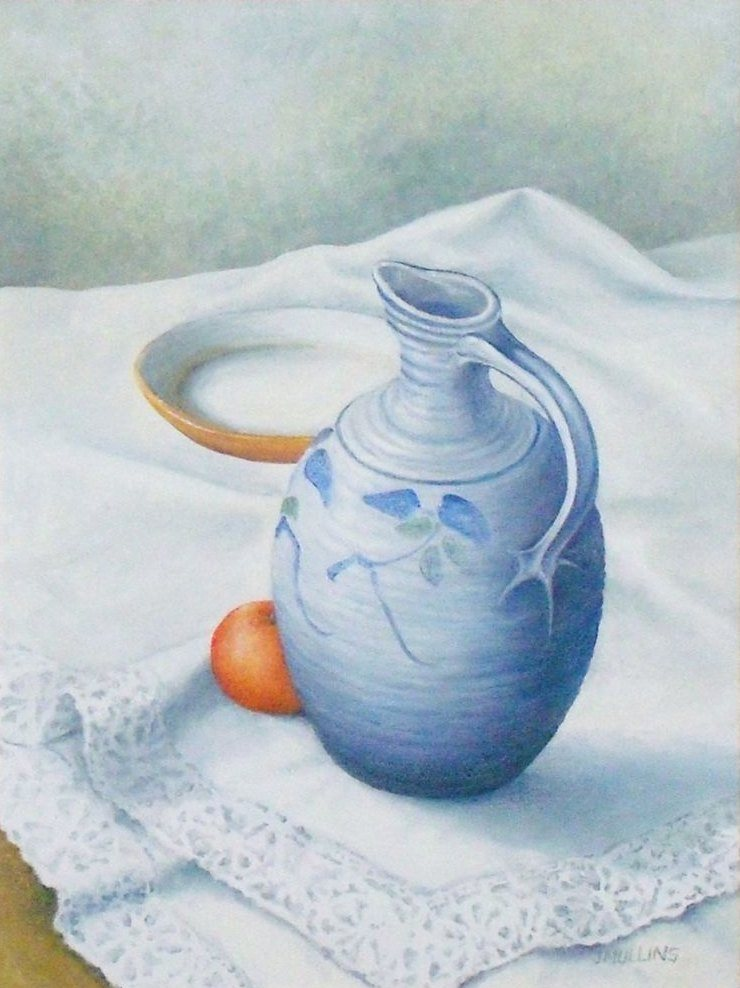

Blue Jug and Orange
No. 88- Medium
- Oil on canvas board
- Size
- 40 × 30 cm
- Year
- 2007
- Price
- £200
This blue jug belonged to a friend and I admired it for some time before borrowing it to paint! The crisp white tablecloth shows up the colour and the shape of the jug. The orange and orange dish are essential in this combination.
Ask about this paintingOr email enquiries@joanmullinsart.co.uk, quoting No. 88. UK only. Collection from Nantwich is free; UK postage is quoted when you enquire.

 Stylised Still Life
Stylised Still Life Three Shells
Three Shells Bottles and mugs
Bottles and mugs